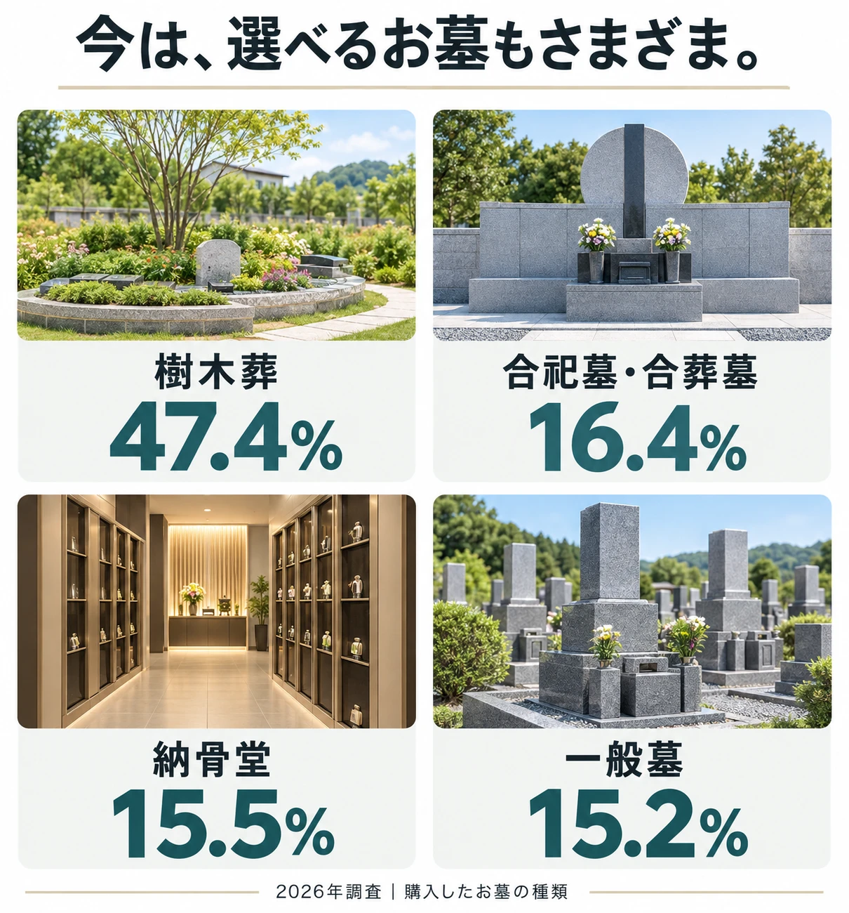
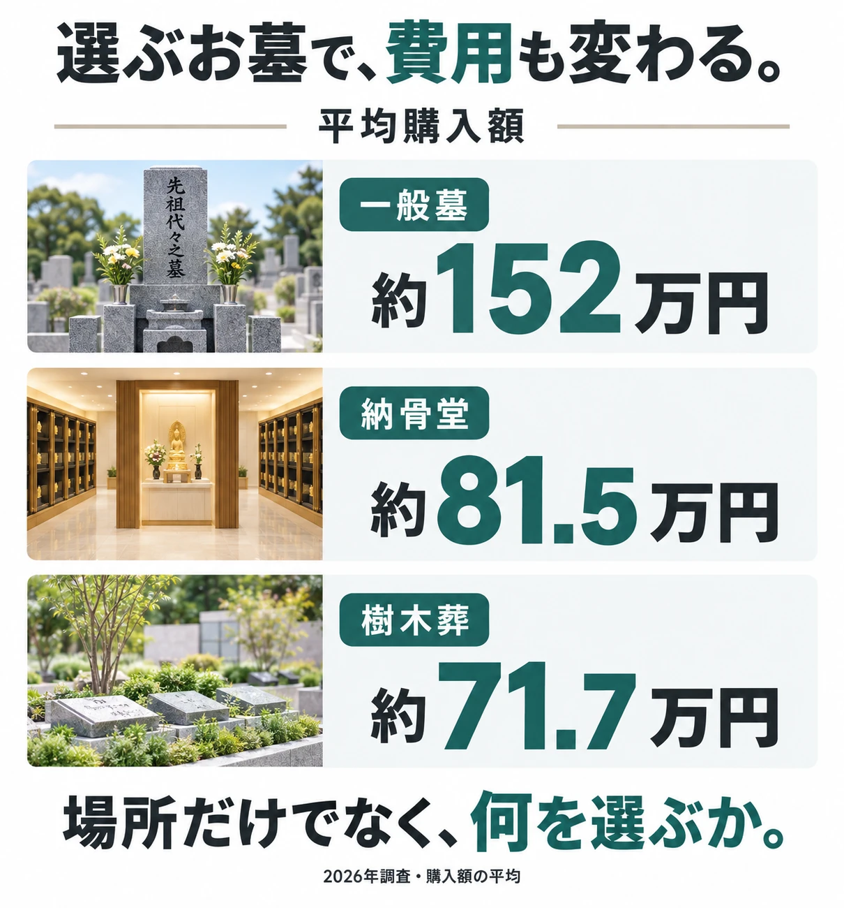
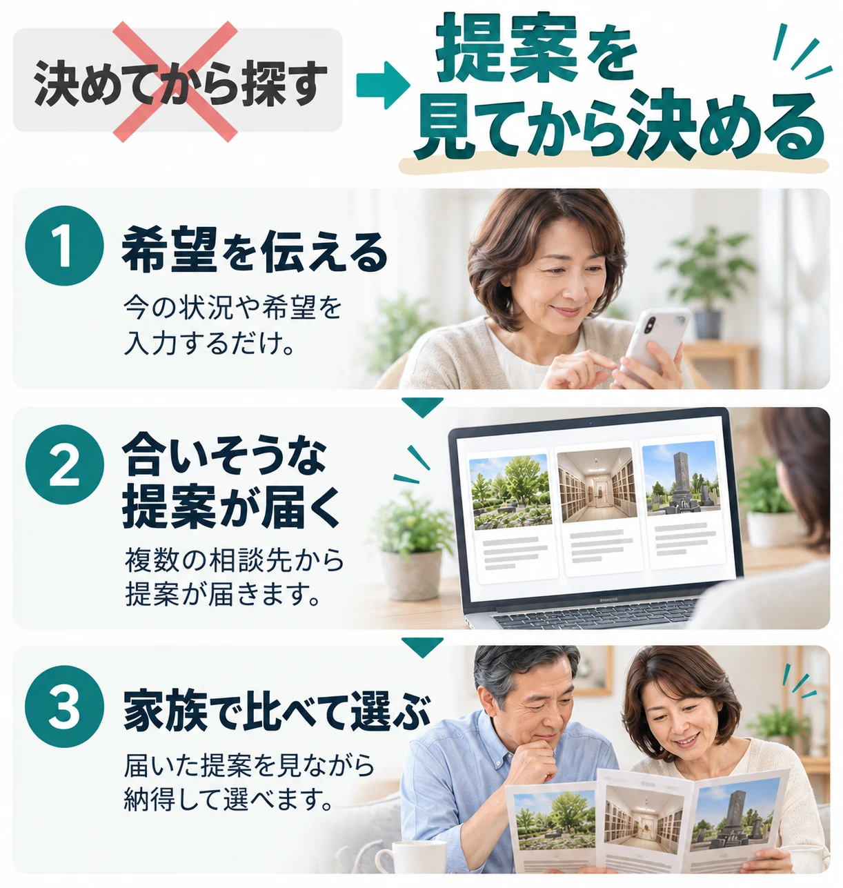
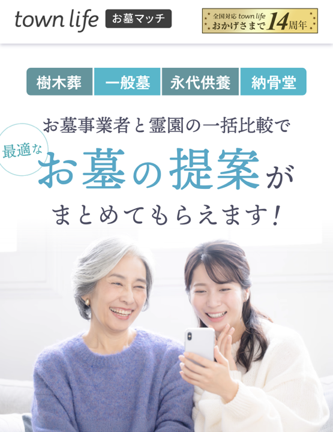
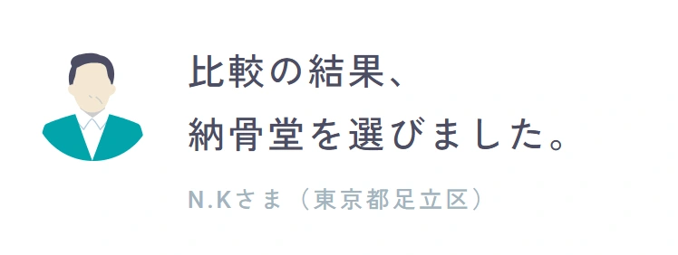
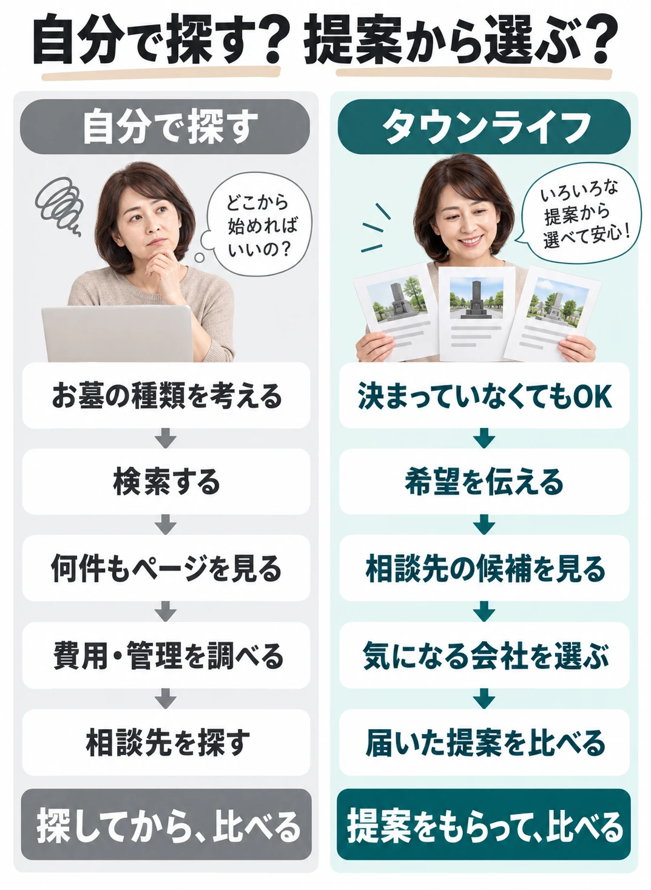

納骨堂は、雨の日でもお参りしやすく、駅に近い施設もあります。
でも、選ぶ前に見たいのは場所だけではありません。
※本記事中の画像はイメージです。
※本記事の金額・内容は一例です。
家族で考える、これからのお墓
納骨堂は、雨の日でもお参りしやすく、駅に近い施設もあります。
でも、選ぶ前に見たいのは場所だけではありません。
納骨堂を選ぶなら
ロッカー式、仏壇式、自動搬送式など、納骨堂にはいくつかのタイプがあります。
タイプによって、お参りの方法、個別スペースの広さ、費用も変わります。さらに、一定期間後に合祀される施設もあります。
通いやすさと一緒に、「どう納めて、どうお参りするか」まで比べるのがポイントです。
お墓の種類は、大きく4つあります。ここだけ知っておけば十分です。

同じ「お墓」でも、費用も、お参りの仕方も、管理の負担もかなり違います。どれを選ぶかで、探す場所も変わります。
ここまでは、意外とシンプルです。
大変なのは、ここからです。
ひとりで探すと
霊園を1つ調べるだけでも、だいたいこうなります。
候補が増えるほど、検索して、戻って、また検索。これの繰り返しです。
しかも、お墓の種類で費用もかなり変わります。

平均で見ても、一般墓は約152万円、樹木葬は約71.7万円。その差はおよそ80万円あります。
しかも、見るのは霊園だけではありません。お墓の種類・場所・費用も、1件ずつ見比べることになります。
たくさん見ても、どれが自分に合うのか分からない。
探し方のコツ
最初から「樹木葬にする」と決めて探すと、合わなかったときに探し直しになります。
なので、先に候補を見ます。

最初に決めるのは、お墓の種類ではありません。場所や予算など、今わかる希望だけ。あとは、候補を見ながら決めれば大丈夫です。
それができるのが

これ、かなり便利です。
お墓の種類を最初に決めなくても、場所や予算など、今わかる希望を伝えるだけ。
自分で1件ずつ霊園を探し回る代わりに、選んだ会社から提案を受け取って、まとめて比べられます。
しかも、価格だけじゃありません。
空き区画・納期・管理方法など、検索だけでは分かりにくいことまで直接相談できます。
「何から始めればいいか分からない」人ほど使いやすい。
提案を見てから考えられるので、一般墓・樹木葬・納骨堂のどれかに最初から1つに決める必要もありません。
ここまでできて、提案・比較は無料。
1件ずつ探し回るより、かなりラクです。
約60秒／提案・比較無料
ちゃんとした会社？
運営しているのは、タウンライフ株式会社。注文住宅やリフォームなど、10以上の住まい系サイトを全国で運営している会社です。
実は、複数の会社をまとめて比べる仕組みを、ずっと作ってきた会社です。その仕組みを、お墓探しにも広げたのがこのサービスです。
「670,000人」はタウンライフシリーズ全体の累計で、お墓マッチ単体の数字ではありません。出典：タウンライフお墓マッチ／タウンライフ株式会社（2026年9月20日確認）。
さらに、ご成約で
最大10,000円分
QUOカードPayプレゼント
タウンライフ株式会社提供。ご成約が条件で、提案依頼だけでは対象になりません。もらえる条件や金額の上限は公式サイトをご確認ください。「QUOカードPay」は株式会社クオカードの登録商標、スマートフォン専用です（同社へのお問い合わせはご遠慮ください）。
約60秒／提案・比較無料
実際、使った人はどうだった？
実際、どうだった？
納骨堂
「比較の結果、納骨堂を選びました。」

都会で暮らす家族が通いやすい場所を探して利用。ネット上の古い情報ではなく、今空いている駅近の納骨堂を、いくつか紹介してもらえたのが決め手でした。
天候に左右されずお参りできること、そしてこれからかかる維持費も、まとめて比べられたことで、納骨堂に決めやすくなったそうです。
N.Kさま（東京都足立区）
最初から納骨堂に決めていたわけではありません。候補を見て、比べて、最後に決めています。
一般墓
「最新の“空き区画”を確保できました」
自分で検索していた頃は、良さそうな場所は「満員」か「情報が古い」ものばかり。提携している店が一般の物件サイトには載っていない最新の空き区画を紹介してくれ、日当たりのいい希望エリアを確保できました。
Y.Sさま（東京都江戸川区）
樹木葬
「樹木葬を選んで負担が解消しました」
「お墓は石のもの」という思い込みがありましたが、届いた提案を比べるうちに、管理費も跡継ぎの負担もない永代供養付き樹木葬を知りました。これからどう管理するかも分かったので、安心して選べたそうです。
N.Kさま（東京都足立区）
出典：タウンライフお墓マッチ 利用者の声（本文は要約）。個人の感想です。
事例1
ひとりで探していたら…
見積もり
約170万円
最初に相談した石材店では、一般墓を建てる費用として約170万円の見積もりでした。ただ、相場が分からず「この金額が妥当なのか」と不安を感じていました。
お墓マッチを使ったら…！
見積もり
約130万円
複数の会社に問い合わせて、お墓の種類や費用を比べたら、同じエリア・同程度の条件で約130万円の提案が見つかり、約40万円費用を抑えられました。
事例2
通常2〜3か月のお墓づくりが約1か月で完了
2〜3か月→約1か月
四十九日に間に合うか心配でしたが、希望する時期を複数の会社に相談でき、相談開始から約1か月で納骨まで終わりました。
事例3
車で片道2時間が徒歩15分に
2時間以上→約15分
通いやすいお墓が見つからず諦めかけていましたが、まとめて比べたところ、家から近い場所に希望に合うお墓が見つかりました。
出典：タウンライフお墓マッチ掲載事例（本文は要約）。写真はイメージ、金額は一例です。個人の感想で、同じ結果を保証するものではありません。
費用が変わった人もいれば、納骨までの時期や通いやすさが変わった人もいます。家族によって、大事にしたいことは違います。だから、まず候補を見てから考える。その方が決めやすくなります。
約60秒／提案・比較無料
使い方も、見てみます。
使い方もかんたん
STEP 1
地図から地域をタップするだけです。
STEP 2
文章を書く必要はありません。出てきた質問に答えるだけです。お墓の種類も、まとめて選べます。
STEP 3
霊園の一覧ではなく、相談できる会社が出ます。どの会社が何を扱っているかも、ここで分かります。
STEP 4
左のチェック欄で選びます。全部に相談する必要はありません。
STEP 5
候補を見て、相談先を選んでから入力します。ここまで約60秒です。
操作の流れを示したイメージです。会社名や写真を隠したサンプル画面を含みます。表示される会社は地域や条件により異なります。
約60秒／提案・比較無料
最後に、自分で探す場合と比べてみます。
違いはここ

違うのは、最初にやること。1件ずつ探す手間を減らせます。
お墓探しを、
「探す作業」から
「選ぶ作業」へ。
最後に、よく聞かれることだけ。
気になること
提案依頼から比較までは無料です。お墓の購入や契約には別途費用がかかります。
使えます。一般墓・永代供養墓・樹木葬・納骨堂などを複数選んで、まとめて相談できます。
なりません。チェックを入れた会社にだけ届きます。相談したい会社だけ選べます。
最後に
一般墓か、樹木葬か、納骨堂か。どのお墓にするかは、候補を見てから決めれば大丈夫です。
1件ずつ探し回る前に、まず候補を見てみる。その方が、かなりラクです。まずは、自分の場合にどんな候補が出るか見てみてください。
約60秒／提案・比較無料